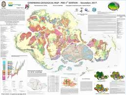
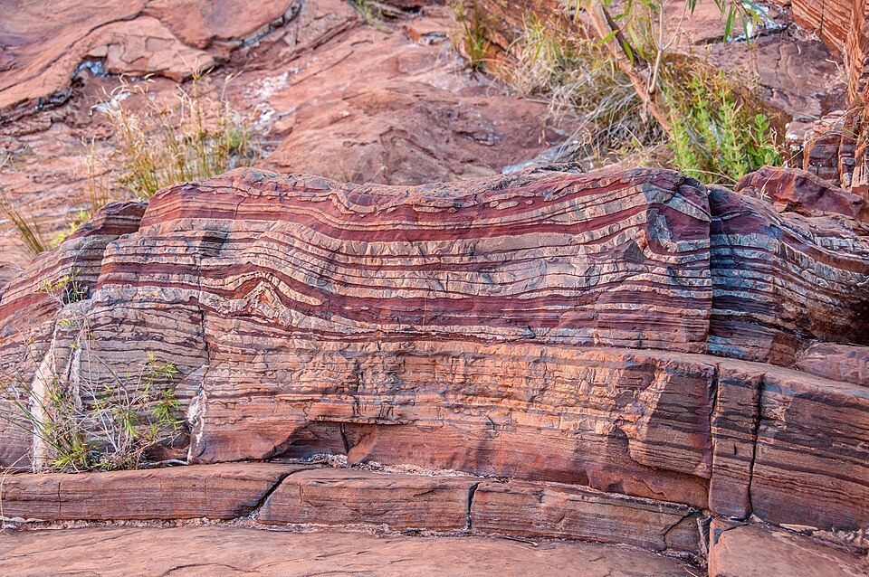

Geologic Formation

Antarctica was once part of the supercontinent Gondwana, which began breaking apart about 180 million years ago. The continent has a complex geologic history that includes:
- Ancient Precambrian shield areas over 3 billion years old
- Mountain-building events during the Paleozoic era
- Extensive glaciation beginning about 34 million years ago
- Volcanic activity continuing to the present day
Rock Types and Composition
Antarctica contains diverse rock types including:
Metamorphic Rocks
Ancient rocks transformed by heat and pressure
Sedimentary Rocks
Containing fossils from warmer periods

Igneous Rocks
From ancient and modern volcanic activity
Tectonic History
Gondwana Breakup
Antarctica was central to the supercontinent Gondwana, which included:
- South America (separated 25-30 million years ago)
- Africa (separated 160 million years ago)
- Australia (separated 85 million years ago)
- India (separated 130 million years ago)
Modern Tectonic Activity
While generally stable, Antarctica has some active areas:
Active Volcanoes: Mount Erebus (continually active since 1972)
Mountain Building: Transantarctic Mountains still rising
Rift Systems: West Antarctic Rift System (similar to East African Rift)
Mineral Resources
While mining is prohibited under the Antarctic Treaty, the continent contains significant mineral resources:
| Resource | Location | Estimated Quantity |
|---|---|---|
| Iron ore | Prince Charles Mountains | Billions of tons |
| Coal | Transantarctic Mountains | Several hundred billion tons |
| Copper | Antarctic Peninsula | Significant deposits |
| Gold | Various locations | Trace amounts |
| Oil & Gas | Continental shelf | Potential reserves |
The Protocol on Environmental Protection to the Antarctic Treaty (1991) prohibits all mineral resource activities except for scientific research.